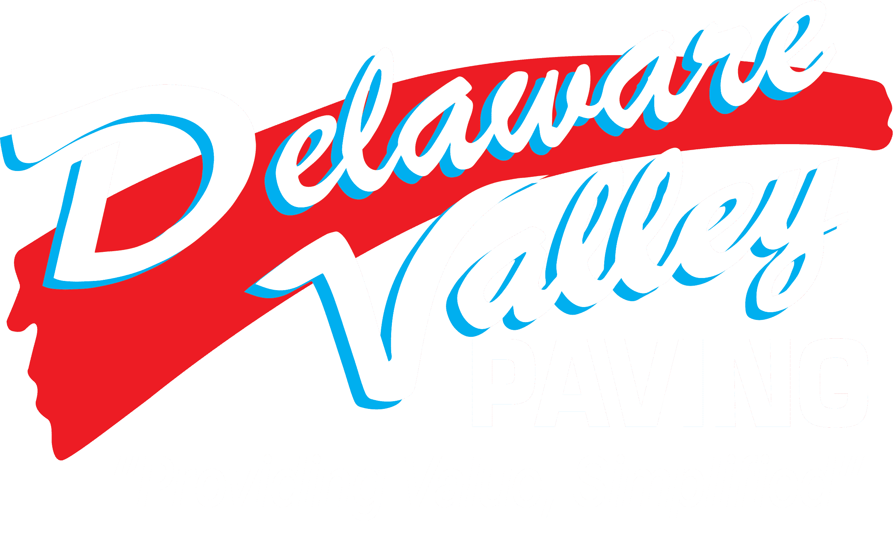

Head of AI & Automation
Russell Dudek · Pittsburgh, PA · Tampa Bay relocation planned · 412.287.8640 · russelldudek@gmail.com

Be on-site, follow the workflow, build a narrow production mechanism, instrument it, and use what survives real work to define the function.
Read the system and establish the baseline
- Conduct office and field Gemba with estimating, project management, operations, procurement, finance, closeout, and support.
- Select three workflows for deep mapping: estimate-to-project, project/field evidence, and one finance or closeout path.
- Inventory NetSuite, Microsoft 365, field tools, integrations, exports, spreadsheets, mailboxes, permissions, data owners, and support dependencies.
- Document current cycle time, manual touches, rekeying, completeness, exception age, recurring rework, and user frustration.
- Agree on decision rights, data authority, security boundaries, human approvals, production readiness, and stop criteria.
Build the first load-bearing joint
- Co-design a narrow estimate-to-project pilot with a small estimator/project-manager cohort.
- Create a structured handoff record that carries scope, assumptions, evidence, owners, and open exceptions.
- Implement one repeatable integration pattern with authentication, logging, retry/recovery, error ownership, and support notes.
- Create the minimum useful project workspace and visibility surface; avoid a broad dashboard before the source workflow improves.
- Launch with instrumentation and a user feedback cadence; treat workarounds as design evidence, not user failure.
Day-60 decision review
| Question | Evidence required |
|---|---|
| Did the mechanism reduce work? | Baseline vs observed manual touches, waiting, rekeying, and exception handling. |
| Did it preserve operational truth? | Scope/evidence completeness, reconciliations, overrides, missing conditions. |
| Did users retain it? | Actual use, completion, fallback behavior, qualitative burden. |
| Can it be supported? | Owner, runbook, monitoring, recovery, access control, change path. |
Head of AI & Automation
Russell Dudek · Pittsburgh, PA · Tampa Bay relocation planned · 412.287.8640 · russelldudek@gmail.com
Prove the decision surface and field connection
- Expand the first workflow only after the day-60 review; repair weak ownership or data before adding features.
- Pilot a second mechanism around field evidence, project status, change control, or closeout readiness based on the strongest observed burden.
- Connect operational status to leadership visibility without requiring a second reporting workflow.
- Publish operating documentation: service owner, business owner, data source, human authority, failure modes, monitoring, support, and recovery.
- Run a production review covering value, trust, adoption, security, reliability, and continuing investment.
Form the function and scale only what earned it
- Build the cross-functional automation portfolio for finance, accounting, AR/AP, sales, and enterprise systems using the Automation Load Test.
- Establish a monthly portfolio cadence: start, stabilize, scale, hold, or stop.
- Publish architecture and development standards for interfaces, identity/access, data contracts, logging, testing, human review, documentation, and recovery.
- Define the internal team, partner, and vendor plan based on actual workload and capability gaps.
- Turn successful work into reusable connectors, templates, evaluation methods, training, and adoption routines.
Operating cadence after day 120
Weekly build review
Delivery status, blockers, errors, user feedback, security issues, and next production decision.
Biweekly workflow review
Workflow owner, baseline movement, exceptions, adoption, design changes, and retirement of workarounds.
Monthly portfolio review
Economic value, operational risk, capacity, dependencies, start/stop/scale decisions, and executive attention.
Quarterly architecture review
Integration debt, data authority, access, reliability, vendor/platform fit, reuse, and team capability.
What success looks like
By day 120, the company should have at least one production workflow with measured operational evidence, a second bounded workflow in use or controlled test, a visible automation portfolio, explicit technical and business ownership, a repeatable integration/support pattern, and a grounded plan for the small team that follows. No numerical outcome is promised before the baseline exists.